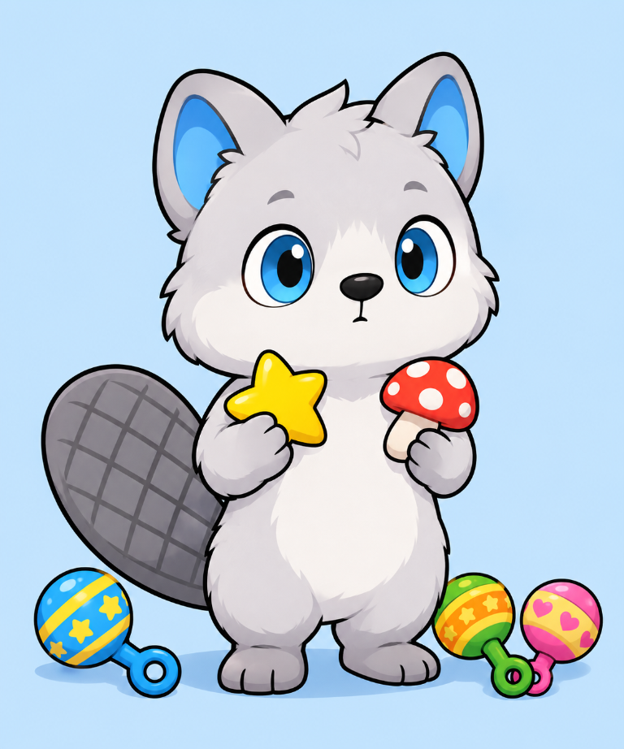

Yaki le malicieux, notre castor à l’allure de husky, a deux instruments préférés. Son hochet étoile est posé sur le moignon de sa patte avant droite et son hochet champignon sur celui de gauche. Dès qu’il les secoue, il ouvre grand ses yeux noirs cerclés de bleu clair : dring ! Il recommence, juste pour entendre le son une deuxième fois.
Pour Yaki, jouer avec un hochet est une petite expérience à répéter. Il bouge le bras, entend le tintement, puis s’arrête pour écouter. Peu à peu, il découvre le lien entre son geste et le bruit qu’il produit. Le son attire son attention et l’encourage à explorer, à recommencer et à comparer les deux hochets.
Un jeu tout simple, plein de découvertes
- Le hochet répond à un mouvement : Yaki explore la relation entre son geste et le son.
- Le tintement lui donne un son à écouter et à reconnaître.
- Attraper, tenir et secouer l’objet lui fait exercer ses gestes et sa coordination.
- Alterner entre l’étoile et le champignon rend le jeu varié et amusant.
Son ventre blanc se balance au rythme de ses secousses et sa queue grise et blanche remue derrière lui. Bientôt, dring dring se transforme en concert. Yaki choisit alors son hochet champignon pour le rappel, tandis que Mini Castor applaudit avec une pomme à la main.
Comme pour tout jouet, on vérifie qu’il est adapté, solide et propre, et on accompagne le jeu. Le plaisir de Yaki vient surtout de sa curiosité : il secoue, il écoute, il recommence. Et il adore ça !